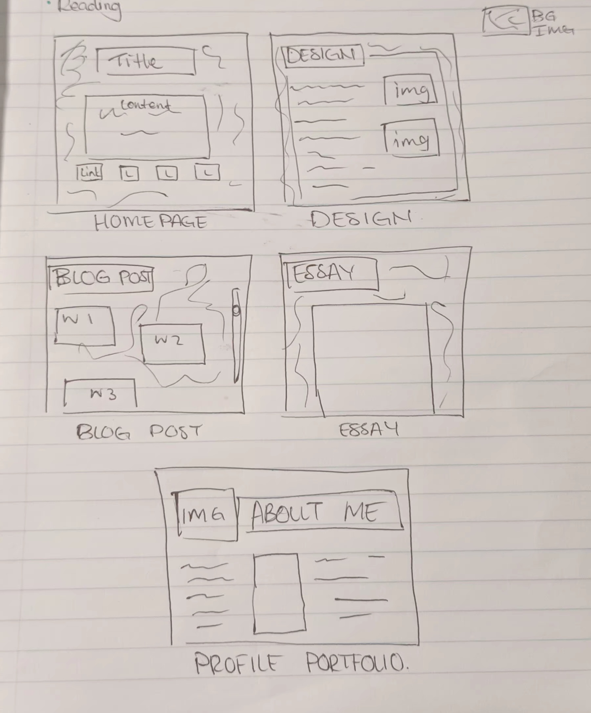
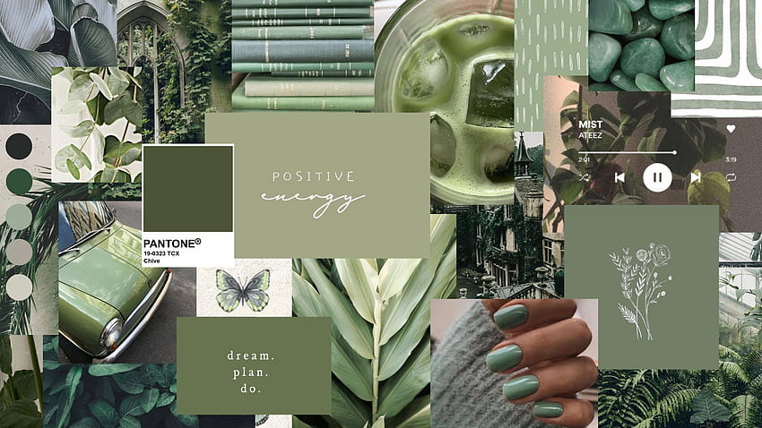
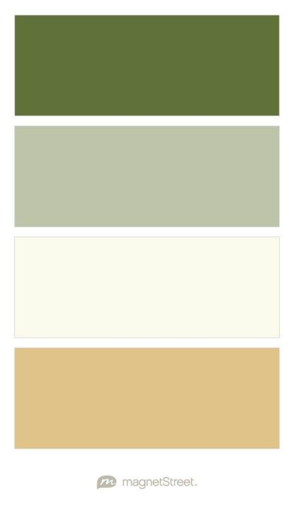

PLANNING AND BRAINSTORMING
For the design portion of my page, I had initially taken inspiration from personal websites from fan pages, most of which would have terrible UI but brilliant wireframing.
Initially I wanted my website to be extremely personal and include a lot of things that best represent what I stand for. As time went on, I realised that this is not a personal blog but rather a professional portfolio so my wireframing had to change.
The image below was my first low-fidelity wireframe. I was going to include everything on one page with links that glide down to different sections when selected. Unfortunately due to time and inexperience, this idea could not come to light so instead I redrew another wireframe. This one being more suited to handle all the pages required with less effort than the previous idea had.
The second framing has 5 pages that each appeal to the specifics of the brief. Each page had a specific design catered to it. Unfortunately due to time, a majority of these ideas could not be implemented.

COLOUR AND AESTHETICS
The colour scheme I chose for this website was green and white. I mainly got this inspiration from Tumblr blogs and travel websites whereby the backgrounds included an image of a desired place. I also like green because it is a refreshing colour, which is why I went for a plant background. The background is a bit too dark so I also implemented a Cream white accent in order for the writing to be visible. I felt as though these two colours balance each other out with the green providing more aesthetic value and the white background highlighting the focus of the content.


I struggled with changing the links to the desired colour I wanted. The links were supposed to be white as well to best fit the theme but I had trouble with the CSS which resulted in me using an alternative method to make sure they are visible to the user.
I also decided to combine both Profile and Portfolio pages as seen in my final wireframe.